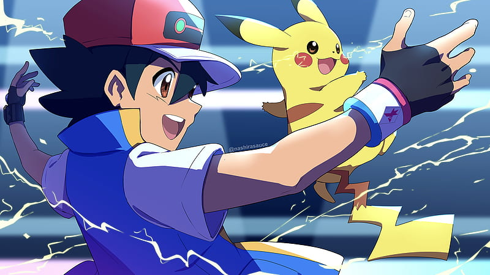
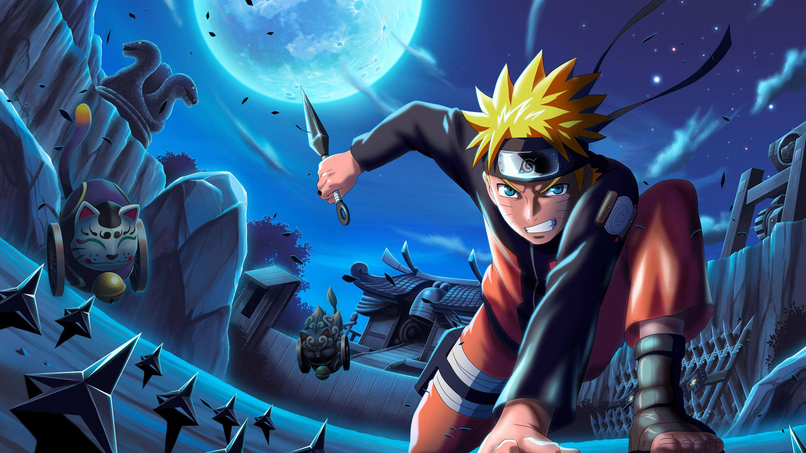
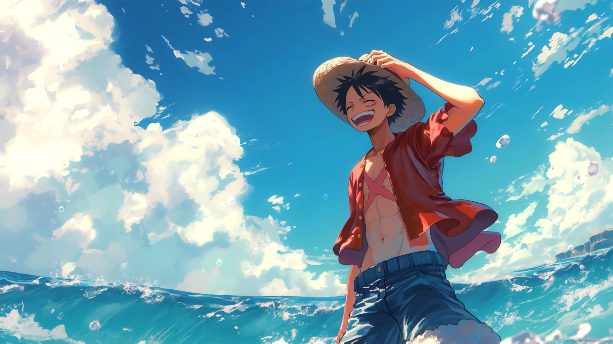

Mais conhecido apenas como Goku, cujo nome de nascimento é Kakarotto (カカロット Kakarotto?), é o protagonista da franquia Dragon Ball, criada por Akira Toriyama. Sua primeira aparição ocorreu no primeiro capítulo do mangá Dragon Ball, intitulado Bulma e Son Goku (japonês: ブルマと孫悟空 Hepburn: Buruma to Son Gokū?), publicado na revista Weekly Shōnen Jump em 3 de dezembro de 1984. Goku é inspirado num personagem com o mesmo nome, 孫 悟空 (lê-se Sun Wukong em mandarim e Son Goku em japonês), personagem principal do romance chinês Jornada ao Oeste. Porém, Toriyama mudou algumas de suas características para ser mais original. Goku é apresentado como um menino estranho, com rabo de macaco e força sobre-humana. Conforme a história se desenrola, é revelado que ele descende de uma raça fictícia chamada Saiyajins, uma das raças mais poderosas do universo.
ANIME
BLEACH
Ichigo Kurosaki
É um personagem fictício e protagonista da série de mangá Bleach e suas adaptações criado por Tite Kubo. Ichigo adquiriu poderes de shinigami logo após o encontro com Rukia Kuchiki, uma shinigami encarregada de patrulhar a sua cidade, a cidade fictícia de Karakura. Como resultado, ela perdeu seus poderes, e para compensar o ocorrido, Ichigo decide trabalhar como substituto temporário de Rukia, lutando para proteger as pessoas dos espíritos malignos chamados de Hollows, enviando os espíritos bons para a Soul Society.

ANIME
POKEMON
Ash Ketchum
Desde o primeiro episódio, Ash Ketchum tem sido o personagem central, cumprindo seu objetivo de se tornar um Mestre Pokémon. Embora seu objetivo inicial como Treinador fosse derrotar seu rival Gary, os vários Pokémon que Ash encontrou em sua jornada lhe mostraram o que ser um Mestre Pokémon realmente significa. Diferentemente dos Treinadores de Pallet e dos treinadores de Kanto em geral, Ash não começa sua jornada com um Bulbassauro, Charmander ou Squirtle, pois chegou atrasado ao laboratório do Professor Carvalho para receber seu Pokémon inicial. Em vez disso, Ash recebeu o único Pokémon que Carvalho ainda tinha para dar, um Pikachu que não gostava de ficar dentro de sua PokéBola. A partir desse momento, Ash aprendeu a tratar seus Pokémon como parceiros, ganhando a confiança de seu Pikachu ao salvá-lo de um bando de Spearow que estavam o atacando.

ANIME
NARUTO
NARUTO
Doze anos antes do início da série, um monstro conhecido como Raposa de Nove Caudas (Kyuubi) atacou a aldeia de Konoha, destruindo grande parte da aldeia e tirando muitas vidas. O líder da aldeia, o quarto Hokage, sacrificou a sua vida para selá-la em um recém-nascido, Naruto Uzumaki. Órfão por causa do ataque, Naruto sempre é evitado pelos moradores, que por medo e raiva, veem-no como o próprio Nove Caudas. Com sua sede por reconhecimento, Naruto jura que um dia se tornará o maior Hokage da aldeia.

ANIME
ONE PIECE
Monkey D. Luff
Conhecido como Luffy do Chapéu de Palha, é um personagem fictício e o protagonista da franquia One Piece criada por Eiichiro Oda. Ele é apresentado como um jovem cujo corpo ganha as propriedades de borracha após ter comido a Gomu-Gomu no Mi, uma das várias frutas amaldiçoadas conhecidas como Akuma no Mi. Em busca de seu sonho de ser o Rei dos Piratas, Luffy navega pelo mundo procurando o lendário tesouro One Piece que foi deixado por Gol D. Roger, o antigo Rei dos Piratas. Alegre e aventureiro, Luffy cria seu próprio bando chamado os Piratas do Chapéu de Palha e eles são constantemente antagonizados pela marinha do Governo Mundial. Em batalha, Luffy usa a elasticidade de seu corpo para se esticar e lutar.